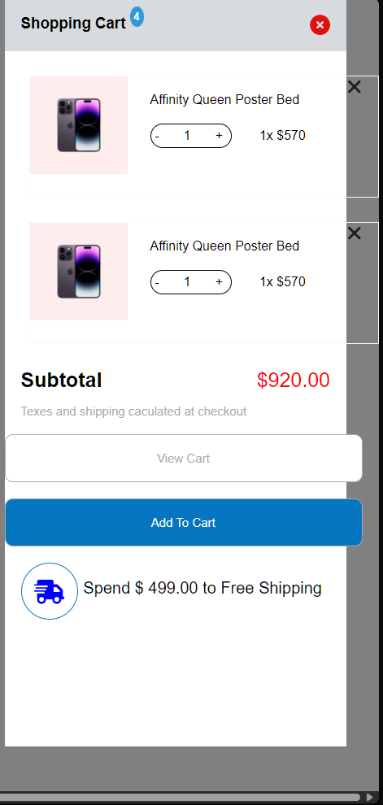

Sớm nhất
[x] Bài 1: Bài làm tốt *
Chưa có border-radius cho mega menu.
Font-weight của các menu con hơi mỏng.
Font-size của các menu con hơi to.
Sai màu của navbar-menu khi hover.
Chưa xử lý khoảng trắng khiến cho trước khi hover vào mega menu thì bị mất.
Các phần text không nên để màu mặc định là #000 mà nên để màu #333 vì màu #000 quá tương phản khiến cho mắt bị mỏi.
List menu ở dưới của Projects chưa thẳng hàng.
List menu ở Elements chưa chưa thẳng hàng với bản mẫu.
Phần .seperate(Sai chính tả => separate) hơi đậm, dày hơn bản mẫu.
[x] Bài 2: Bài làm tốt *
Xử lý chưa tốt khi phải focus vào thẻ a thì mới mở cart.
Nút Add To Cart và View Cart sai màu background.
Font-size của p.desc quá nhỏ.
Nút X để xóa sản phẩm quá nhỏ.
Nút tăng giảm số lượng hơi ngắn so vơi bản mẫu.
[x] Bài 3: Bài làm tốt *
Sai font chữ, font chữ của bản mẫu là một font chữ có chân ở các title.
Phần line-height của .item .desc quá nhỏ.
[x] Đánh giá chung về bài tập về nhà: Bài làm tốt *
Các bài làm đều tốt, chỉ có một số lỗi nhỏ về CSS về các tiểu tiết. Chú ý đến các tiểu tiết nhỏ sẽ giúp cho bài tập trở nên hoàn hảo hơn.
[x] Bài 1: Bài làm tốt *
Font-size title của các menu con hơi to.
Chưa xử lý khiến cho khi hover vào mega menu thì bị mất.
List menu ở dưới của Projects chưa thẳng hàng.
List menu ở Elements chưa chưa thẳng hàng với bản mẫu.
[x] Bài 2: Bài làm rất tốt *
Nút X để xóa sản phẩm quá nhỏ.
[x] Bài 3: Bài làm tốt *
Sai font chữ, font chữ của bản mẫu là một font chữ có chân ở các title.
Phần font-size của .service .text quá nhỏ.
[x] Đánh giá chung về bài tập về nhà: Bài làm tốt *
Các bài làm đều tốt, chỉ có một số lỗi nhỏ về CSS về các tiểu tiết. Chú ý đến các tiểu tiết nhỏ sẽ giúp cho bài tập trở nên hoàn hảo hơn.
[x] Bài 1: Bài làm rất tốt *
Phần text của navbar menu quá chìm vào nền.
Nên chú ý thêm vào phần meta title vì chúng rất quan trọng trong SEO và trải nghiệm người dùng.
[x] Bài 2: Bài làm tốt *
Nên chú ý thêm vào phần meta title vì chúng rất quan trọng trong SEO và trải nghiệm người dùng.
Nút Add To Cart và View Cart chưa đồng nhất về chiều cao.
Font-size của p.content quá nhỏ.
[x] Bài 3: Bài làm tốt *
Nên chú ý thêm vào phần meta title vì chúng rất quan trọng trong SEO và trải nghiệm người dùng.
Sai font chữ, font chữ của bản mẫu là một font chữ có chân ở các title.
Phần line-height của .item_sub quá nhỏ.
[x] Bài 1: Bài làm chưa tốt
Mọi thứ đều quá to, nhìn rất mỏi mắt.
Font-size của các menu con hơi to.
Việc xử lý bằng cách focus vào thẻ a là không tốt. Nên xử lý bằng cách hover vào thẻ cha.
List menu ở Elements chưa chưa thẳng hàng với bản mẫu.
Chưa có đường dọc phân cách giữa các menu con.
[x] Bài 2: Bài làm tốt
Mọi thứ đều quá to, nhìn rất mỏi mắt.
Nút tăng giảm số lượng hơi thấp so vơi bản mẫu.
[x] Bài 3: Bài làm tốt *
Sai font chữ, font chữ của bản mẫu là một font chữ có chân ở các title.
Phần line-height của <p>...</p> quá nhỏ và sai màu.
Các phần tiêu đề của box trong section service nên dùng thẻ h3 thay vì thẻ p.
[x] Đánh giá chung về bài tập về nhà: Bài làm tốt *
Các bài làm đều tốt, chỉ có một số lỗi nhỏ về CSS về các tiểu tiết. Chú ý đến các tiểu tiết nhỏ sẽ giúp cho bài tập trở nên hoàn hảo hơn.
[x] Bài 1: Bài làm tốt *
Sai màu của navbar-menu khi hover.
Chưa xử lý khoảng trắng khiến cho trước khi hover vào mega menu thì bị mất.
List menu ở Elements chưa chưa thẳng hàng với bản mẫu.
Phần border-right .content__left hơi đậm, dày hơn bản mẫu.
Sai layout ở progressbar
[x] Bài 2: Bài làm tốt *
Nút Add To Cart và View Cart hơi thấp so với bản mẫu.
Nút X để xóa sản phẩm quá nhỏ.
Nút tăng giảm số lượng hơi ngắn so với bản mẫu.
Phần .footer__desc ở sai vị trí
[x] Bài 3: Bài làm tốt *
Phần font-size của <p>...</p> quá nhỏ.
Các title <h2>...</h2> bị lệch nhau.
[x] Đánh giá chung về bài tập về nhà: Bài làm tốt *
Các bài làm đều tốt, chỉ có một số lỗi nhỏ về CSS về các tiểu tiết. Chú ý đến các tiểu tiết nhỏ sẽ giúp cho bài tập trở nên hoàn hảo hơn.
[x] Bài 2: Bài làm rất tốt *
Phần .total-price hơi nhỏ so với bản mẫu, Không nên sử dụng thẻ div để thể hiện giá tiền, nên sử dụng thẻ span, vì thẻ div được sử dụng để tạo khối.
[x] Bài 3: Bài làm tốt *
Phần font-family của <p>...</p> sai, ở bản mẫu là một font chữ không chân.
Phần button sai border, ở bản mẫu không có border.
[x] Đánh giá chung về bài tập về nhà: Bài làm rất tốt *
Các bài làm đều rất tốt, sáng tạo là tốt, tuy nhiên hầu hết các trường hợp, nên tuân thủ theo bản mẫu, nên chú ý đến các tiểu tiết nhỏ sẽ giúp cho bài tập trở nên hoàn hảo hơn.
[x] Bài 1
Bài làm chưa tốt
Phần background-image bị hiện cả ở phần header
Drop-menu căn chỉnh chưa đều, thiếu cột
Chưa có box-shadow cho drop-menu
Khi hover vào các thẻ li trên menu thì đổi màu cả icon mũi tên xuống và text (trong bản mẫu chỉ đổi màu text)
[x] Bài 2
Bài làm chưa tốt
Phần shopping-cart chưa chiếm hết height, height phần này cần chiếm hết màn hình
Phần ảnh và product-info chưa được căn giữa, vẫn bị lệch
Chữ trong phần product-info nhạt hơn so với bản mẫu
Thiếu phần giá $920.00 chưa làm
Chữ Shopping Cart và Subtotal dày hơn so với thiết kế
Các nút button có border hơi dày, chưa được căn giữa, chữ hơi nhỏ, sai màu nền
Chữ Send $ 499.00 Free Shipping cần được căn sát lề phải, font-weight mỏng hơn so với bản mẫu
Nút x không hoạt động, cho icon vào thẻ label trỏ đến thẻ input checkbox để khi click vào dấu x sẽ tắt shopping cart
[x] Bài 3
Bài làm chưa tốt
Đặt width, height cho ảnh nhưng không sử dụng object-fit: cover khiến cho ảnh bị méo
Khoảng cách giữa ảnh và thẻ h2 hơi ít
font-size của phần description to hơn bản mẫu, chưa có line-height
Nút read more nhỏ hơn so với bản mẫu
[x] Bài 1
Bài làm chưa tốt, còn rất nhiều lỗi, hầu như không giống với giao diện mẫu (Làm lại)
[x] Bài 2
Bài làm chưa tốt, không giống với giao diện mẫu
Bài làm cần sát lề phải, chiều cao full màn hình
Lỗi ảnh ở sản phẩm 2
Căn lệch số 4 ở text shopping cart
Nút x để đóng nhỏ hơn so với bản mẫu
Nút view cart không dùng thẻ input để làm, dùng thẻ button hoặc thẻ a
Nút add to cart thừa border
Các nút button có border hơi dày, chữ hơi nhỏ
Phần giá và đoạn text ở dưới bị căn lệch
[x] Bài 3
Bài làm chưa tốt
Hầu như không có khoảng cách giữa các phần tử trong bài
Bố cục bài bị lệch nhau
Tiêu đề của các item có font-size nhỏ
Phần desc chưa có line-height, hơi to so với thiết kế
Nút read more bị sai màu, thừa border
[x] Bài 1: Bài làm rất tốt *
Các phần text không nên để màu mặc định là #000 mà nên để màu #333 vì màu #000 quá tương phản khiến cho mắt bị mỏi.
List menu ở dưới của Projects chưa thẳng hàng.
[x] Bài 2: Bài làm rất tốt *
Nút X để xóa sản phẩm quá nhỏ.
Phần .shipping-promotion có font-weight quá lớn so với bản mẫu.
Nút tăng giảm số lượng hơi thấp so vơi bản mẫu.
[x] Bài 3: Bài làm rất tốt *
Sai font chữ, font chữ của bản mẫu là một font chữ không chân ở các content.
[x] Đánh giá chung về bài tập về nhà: Bài làm tốt *
Các bài làm đều rất tốt, chỉ có một số lỗi nhỏ về CSS về các tiểu tiết. Chú ý đến các tiểu tiết nhỏ sẽ giúp cho bài tập trở nên hoàn hảo hơn.
[x] Bài 1: Bài làm tốt *
Tất cả text ở các menu có font-weight quá mỏng.
List menu ở dưới của Projects chưa thẳng hàng.
[x] Bài 2: Bài làm rất tốt *
Các nút +, - để tăng, giảm số lượng sản phẩm quá nhỏ.
Có khoảng trống quá lớn ở phần hiển thị các sản phẩm, nhưng lại có scroll, nên cho phần hiển thị nhiều hơn.
[x] Đánh giá chung về bài tập về nhà: Bài làm tốt *
Các bài làm đều rất tốt, chỉ có một số lỗi nhỏ về CSS về các tiểu tiết. Chú ý đến các tiểu tiết nhỏ sẽ giúp cho bài tập trở nên hoàn hảo hơn.
[x] Bài 1: Bài làm tốt
Vì mega menu là một menu con của navbar menu, không nên hiển thị luôn mà sử dụng action hover để hiển thị.
Tất cả text ở các menu có font-weight quá mỏng.
Phần width của mega menu quá dài. Dẫn đến tất cả các item ở trong bị lệch
[x] Bài 2: Bài làm Không Tốt

Sửa lại cho tốt hơn.
[x] Bài 3: Bài làm rất tốt *
Phần line-height của .service-content .service-description p quá nhỏ.
[x] Đánh giá chung về bài tập về nhà: Bài làm tốt *
Các bài làm đều rất tốt. Trừ bài 2. Xem lại bài làm 2 và sửa lại cho tốt hơn.